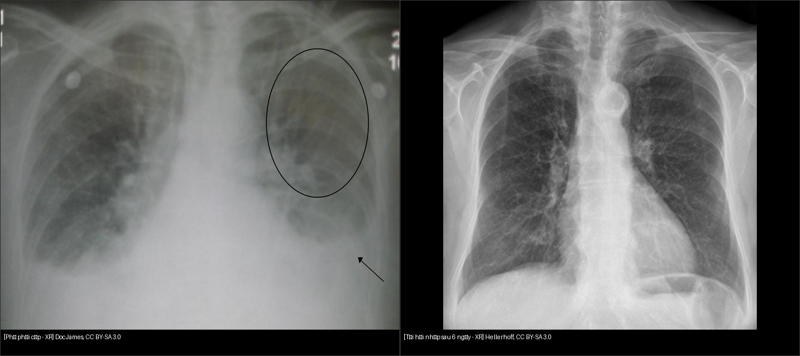
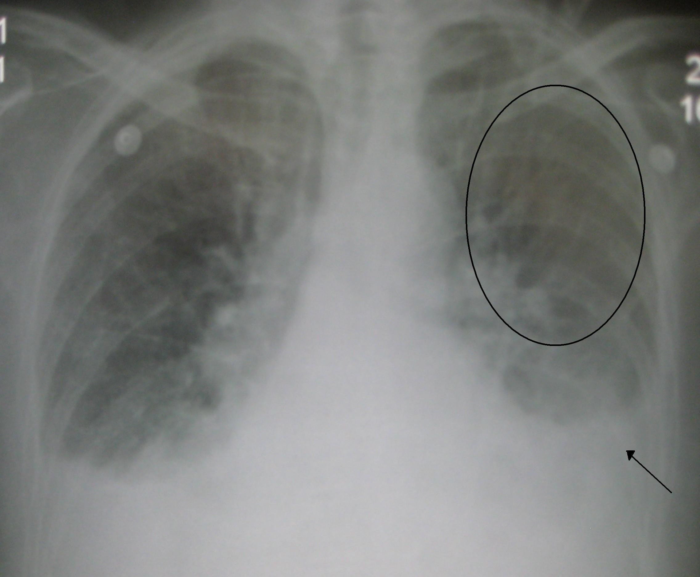
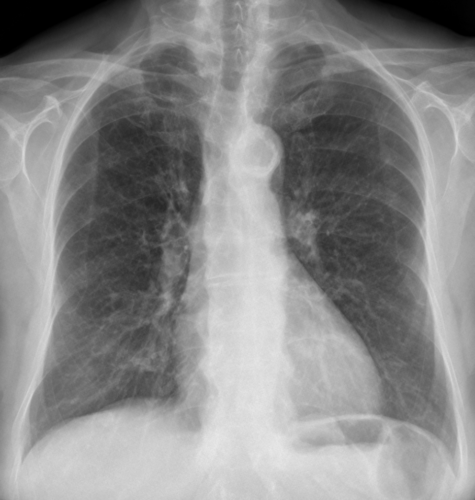

033 — Phù phổi & ARDS / Pulmonary edema & ARDS
Tags: pattern:mo-ke vung:phoi
Mức chắc chắn (certainty): tổng hợp y văn (literature synthesis) — nhóm tự biên từ y văn mở, chưa gắn ca nguyên văn đơn lẻ.
1. Tổng quan — nước vào phổi theo 2 đường + nguyên lý tiểu thùy thứ cấp
- Tiểu thùy thứ cấp (secondary pulmonary lobule, 1–2,5 cm): trung tâm là tiểu động mạch + tiểu phế quản; ngoại vi là tĩnh mạch + bạch mạch trong vách liên tiểu thùy. Phù tim ứ tĩnh mạch → bạch mạch vách giãn trước → đường Kerley B: dài 1–2 cm, vuông góc màng phổi, chạm màng phổi ở đáy.
- Phù tim (cardiogenic): tăng áp tĩnh mạch phổi → dịch thoát kẽ trước (cuffing, Kerley B) rồi tràn nang (cánh bướm (bat-wing) trung tâm, tái phân bố lên đỉnh (redistribution), tim to, dịch màng phổi).
- ARDS (không do tim): tổn thương màng phế nang-mao mạch → phù ngoại vi, loang lổ, không đối xứng, tim bình thường, không đáp ứng lợi tiểu nhanh; chẩn đoán theo Berlin (P/F + thời gian + loại trừ tim).
- TẠI SAO phân biệt được trên phim: phù tim đối xứng + trung tâm + có dấu tim; ARDS ngoại vi + không đều + không dấu tim. TẠI SAO tan nhanh khi lợi tiểu: dịch kẽ-nang chưa xơ hóa → hồi phục trong ngày (minh chứng bằng cặp phim trước-sau dưới đây).

Trái: phù phổi cấp. Phải: cùng BN sau tái hồi nhập 6 ngày — mờ tan gần hết. Nguồn: Doc James + Hellerhoff, CC BY-SA 3.0. Ảnh ghép letterbox.2. Gamut mờ lan tỏa 2 bên
- Phù tim: cánh bướm + Kerley B + tim to + dịch 2 đáy — đáp ứng lợi tiểu trong giờ-ngày.
- ARDS: sau viêm phổi/viêm tụy/chấn thương, mờ ngoại vi, P/F giảm, không đáp ứng lợi tiểu.
- Xuất huyết lan tỏa (DAH): ho máu + thiếu máu + suy thận (Wegener/Goodpasture) — kính mờ lan tỏa không Kerley.
- Viêm phổi virus/Pneumocystis: kính mờ lan tỏa + lâm sàng nhiễm trùng/suy giảm miễn dịch (nối bài 031).
3. Bảng so sánh phân biệt
| Thực thể (entity) | Hình ảnh điển hình | Chốt vào (rule-in) | Chốt loại (rule-out) | Gợi ý xác nhận |
|---|---|---|---|---|
| Phù tim (cardiogenic) | Cánh bướm + Kerley B (1–2 cm, vuông góc màng phổi đáy) + tim to + tái phân bố đỉnh | Tim to + Kerley B + dịch đáy + tan nhanh sau lợi tiểu | Tim bình thường + ngoại vi không đều + không Kerley cấp → ARDS | NT-proBNP, siêu âm tim |
| ARDS | Mờ ngoại vi loang lổ 2 bên, tim bình thường, không Kerley B giai đoạn cấp | P/F ≤ 300 + khởi phát < 1 tuần + loại trừ tim (Berlin) | Có Kerley B + tim to + dịch nhiều → phù tim hơn | Berlin criteria, bảo vệ phổi |
| Xuất huyết lan tỏa | Kính mờ/đông đặc lan tỏa + ho máu + Hb giảm | Ho máu + suy thận + ANCA (+) | Kerley B + dịch màng phổi nhiều → phù tim | Soi phế quản (BAL máu), miễn dịch |
| Viêm phổi virus | Kính mờ lan tỏa + sốt + test (+) | Dịch tễ + PCR (+) | Tim to + Kerley → phù tim kèm | PCR, CT HRCT |
4. Protocol
- X-quang tại giường (portable/AP): theo dõi hằng ngày ICU; nhớ hiệu ứng AP nằm làm tim bè giả.
- Siêu âm phổi: đường B (B-lines) lan tỏa = hội chứng kẽ-nang; theo dõi đáp ứng lợi tiểu theo giờ.
- CT HRCT (khi không rõ): phù tim = dày vách nhẵn + dịch; ARDS = kính mờ/đông đặc vùng phụ thuộc + ít Kerley; xơ hóa nền (nối bài 034).
5. Cạm bẫy
- Phim AP nằm: tim to giả + mạch đáy nổi giả phù — so phim đứng cũ.
- Điện cực ECG, dây monitor đè lên trường phổi giả nốt — nhìn kỹ vật ngoài thân.
- Phù một bên sau chọc dịch nhanh (re-expansion): đừng đọc viêm lan — hỏi thủ thuật vừa làm.
- Phù không đối xứng do nằm nghiêng lâu: dịch dồn bên thấp — đổi tư thế chụp lại.
6. Tự lượng giá — Blind Quiz
Ca 1 — Khó thở cấp, nghe ran ẩm 2 đáy. Mô tả phim trước.

- Hỏi: tim có to không? Tái phân bố đỉnh? Kerley/dịch đáy? Chẩn đoán + xử trí đầu?
Bấm để hiện đáp án
- Phù phổi cấp do tim: tim to + tái phân bố lên đỉnh (vòng tròn) + dịch ít 2 đáy (mũi tên) — bộ 3 kinh điển.
- Xử trí: ngồi cao chân thõng + Oxy + lợi tiểu + giãn mạch; tìm nguyên nhân (NMCT, cơn THA, rối loạn nhịp).
- Nguồn: Doc James, CC BY-SA 3.0.
Ca 2 — Cùng BN sau 6 ngày điều trị:

Bấm để hiện đáp án
- Mờ tan gần hết sau tái hồi nhập — tính hồi phục nhanh là chốt phân biệt phù tim với xơ/ARDS, đừng vội kết luận viêm mạn.
- Nguồn: Hellerhoff, CC BY-SA 3.0.
Bài liên quan chéo
- 001 – Tổng quan hệ Ngực
- 031 – Viêm phổi mẫu hình (kính mờ nhiễm trùng)
- 035 – Xơ mô kẽ UIP vs NSIP (đã có) (phân biệt xơ mạn)
- 040 – Tràn dịch màng phổi (dịch kèm phù)
Không dùng để chẩn đoán độc lập khi chưa có người hướng dẫn.